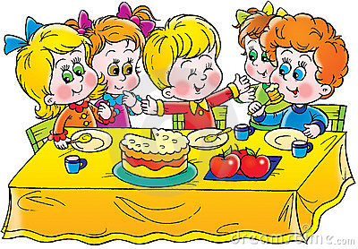

Early Childhood Education Centre

A world class preschool and daycare
COMMITTED TO WORLD-CLASS QUALITY EDUCATION

With the year being half over, we are beginning to have the children
do a little more for themselves here at daycare. At meals now, they are
pouring their own drinks from a small pitcher. We are encouraging them to
put their own chair away when they are done with it. We are helping them
learn how to fold and put away their own napping mats too. These
children are already great at putting on their coats by themselves and are
learning the tricks of hats, gloves, mittens, zippers, snaps, and buttons. At
this age they seem to enjoy taking responsibility for their things so we are
encouraging them to be more independent whenever we can.
Daily Schedules and Routines:
8:30-9:30 FREE PLAY
9:30-10:00- CIRCLE TIME
10:00-10:15 SNACK TIME & STORY TIME
10:15-11:45 ART
11:45-12:00 CLEAN UP
12:00-12:30 LUNCH
12:30-2:30 REST
2:30-3:00 CLEAN UP AND SNACK
3:00-4:30 OUTSIDE PLAY
4:30-5:00 CLEAN UP GET READY FOR PARENTS TO ARRIVE
My daily schedule is more flexible, but we generally do get the activities accomplished if we
start out right!!